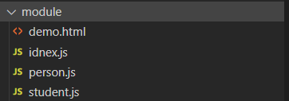
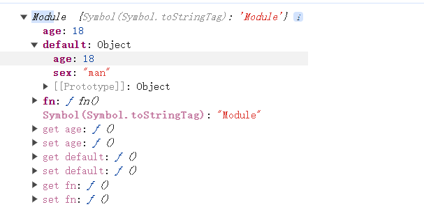

什么是模块(Module)
模块，在 Js 可以看成一个一个局部作用域的代码块。
我们写代码时需要注意高内聚，低耦合，这就需要用到模块系统。它能帮助我们更好的划分代码功能，增加代码复用性，便于维护程序。
引入模块系统的好处：
- 代码模块化管理，便于复用
- 消除过多全局变量
- 管理加载顺序
Module 基本用法
一个文件就是一个模块。 如下是一个基本的用法： 
person.js
class Person {
constructor(name) {
this.name = name;
}
sayHi() {
console.log("hi");
}
}
export default Person;
student.js
import Person from "./person";
class Student extends Person {
constructor(name, age) {
super(name);
this.age = age;
}
}
export default Student;
index.js
import Student from "./student";
let s = new Student("zs",10);
script 标签加载的时候，需要加上 type=“module” demo.html
<!DOCTYPE html>
<html lang="en">
<head>
<meta charset="UTF-8" />
<meta name="viewport" content="width=device-width, initial-scale=1.0" />
<title>Document</title>
</head>
<body>
<script src="./idnex.js" type="module"></script>
</body>
</html>
Module 的导出和导入
注意：模块没有被导出时也可以被导入，导入的作用相当于将导入的代码执行一边，也仅会执行一遍
export default 的导出和对应 import 导入
default.js
const age = 18;
export default age;
通过 default 导出时，变量名字可以随便取
<script type="module">
import age from './default.js'
import age1 from './default.js'
console.log(age)
console.log(age1)
</script>
一个文件只能有一个 export default
const age = 18;
const sex = '男'
export default sex;
export default age;//A module cannot have multiple default exports
可以导出函数或者对象
export default function(){
console.log('export default')
}
<script type="module">
import fn from './default.js'
fn()
</script>
export default {
age: 18,
sex: "man",
};
<script type="module">
import obj from './default.js'
console.log(obj)
</script>
export 导出和对应的 import 导入
基本用法
export 导出的是声明或者语句,导入的时候需要添加括号，如下：
// export 声明或者语句
export const age = 18;
// or
const age = 18;
export {age};
<script type="module">
import { age } from "./export.js";
console.log(age);
</script>
export 导入变量需要和导出一致,不能随意命名
<script type="module">
import { age2 } from "./export.js";
console.log(age2);
</script>
// Uncaught SyntaxError:
The requested module './export.js' does not provide an export named 'age2'
export 多个导出
const age = 18;
function fn() {
console.log("export fn");
}
export { age, fn };
<script type="module">
import { fn, age } from "./export.js";//导入顺序无影响
console.log(age);
fn();
</script>
起别名
需要保证导入的时候和导出的名字一致即可，导入导出时均可取别名。
const age = 18;
function fn() {
console.log("export fn");
}
export { age, fn as func };
<script type="module">
import { func, age } from "./export.js";
console.log(age);
func();
</script>
const age = 18;
function fn() {
console.log("export fn");
}
export { age, fn as func };
<script type="module">
import { func as fn1, age } from "./export.js";
console.log(age);
fn1();
</script>
整体导入
补充：export 跟 export default 可以同时存在，前提条件是 export default 只可以有一个
export const age = 18;
export function fn() {
console.log("export fn");
}
export default {
age: 18,
sex: "man",
};
<script type="module">
import * as obj from "./export.js";
console.log(obj);
</script>
结果如下：
注意事项
1. 模块中的 this 指向 undefined
module.js
console.log(this)
<script type="module">
import './module.js' //undefined
</script>
2. import 执行时，代码还没执行
3. import()可以按条件动态导入
请不要滥用动态导入（只有在必要情况下采用）
import("/modules/my-module.js").then((module) => {
// Do something with the module.
});
let module = await import("/modules/my-module.js");